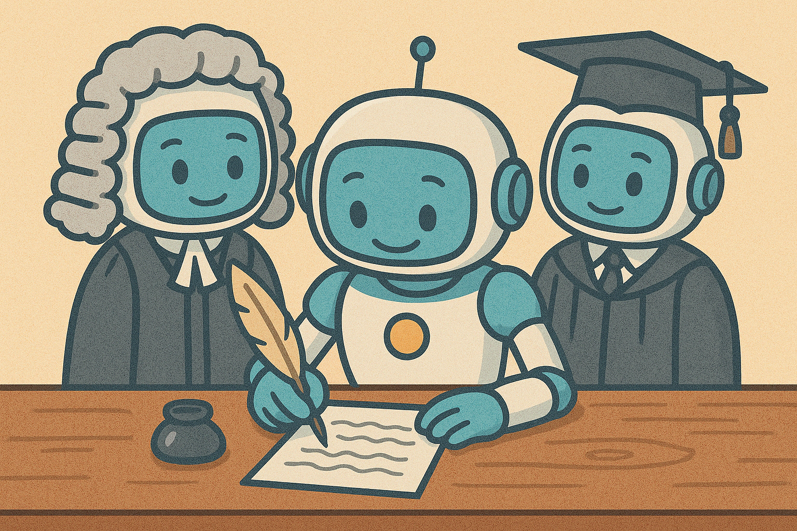

API Tricks
MoE: Mixture of Experts
Ein Chatbot ist mehr als eine einfache Anfrage an ein LLM. Vielmehr triggert jede Userprompt eine vielzahl von Anfragen, einerseits um die Antwort zu generieren, andererseits um die Qualität sicherzustellen.
Ein Prompt - mehrere anfragen
- Schreibe eine Antwort
- Prüfe auf Korrektheit
- Prüfe auf Richtlinien
- …

Minimale Mixture-of-Experts Pipeline
from openai import OpenAI
client = OpenAI(api_key=OPENAI_API_KEY)
# Schritt 1: Anfrage & Richtlinien
user_input = "Wie viele Monde hat der Jupiter?"
richtlinien = "Antworten enthalten nur Fakten, keine Spekulation."
# Schritt 2: Antwort generieren
answer = client.chat.completions.create(
model="gpt-4o",
messages=[
{"role": "system", "content": f"Antworte korrekt innerhalb der Richtlinien.\n Richtlinien: {richtlinien}"},
{"role": "user","content": user_input}
]
).choices[0].message.content
# Schritt 3: Antwort validieren
correct = client.chat.completions.create(
model="gpt-4o-mini", ## leichtere Aufgabe -> kleineres Modell
messages=[
{"role": "system", "content": "Prüfe auf Korrektheit. Antworte nur 'OK' wenn alles korrekt ist."},
{
"role": "user",
"content":
f"Prüfe auf Korrektheit:\n"
f"Frage: {user_input}\nAntwort: {answer}\n"
}
]
).choices[0].message.content
proper = client.chat.completions.create(
model="gpt-4o-mini", ## leichtere Aufgabe -> kleineres Modell
messages=[
{"role": "system", "content": "Prüfe auf Richtlinien. Antworte nur 'OK' wenn alles korrekt ist."},
{
"role": "user",
"content":
f"Prüfe auf Richtlinien:\n"
f"Frage: {user_input}\n Antwort: {answer}\n Richtlinien: {richtlinien}"
}]
).choices[0].message.content
# Schritt 4: Ausgabe
if not correct == "OK":
print("⚠️ Antwort ist inhaltlich falsch.")
elif not proper == "OK":
print("⛔ Verstoß gegen Richtlinien.")
else:
print(answer)Durchdachte Antworten zusammenfassen
Im obigen Beispiel soll die Antwort nur “OK” lauten. Effektiv bringt eine solche Anfrage das Sprachmodell dazu zu wuerfeln, denn ein Denkprozess wird nur dann immitiert, wenn er auch verbalisiert wird. Ein langer Denkprozess kann auf eine kurze Antwort reduziert werden mittels eines zweiten API Calls.
Minimal: Chain-of-Thought + Structured Summary
import openai
openai.api_key = "sk-..."
user_input = "Schwimmt Eis auf Wasser?"
# Schritt 1: CoT-Antwort erzeugen
cot_response = client.chat.completions.create(
model="gpt-4",
messages=[{
{"role": "system", "content":"Finde Schritt für Schritt eine Antwort auf die Anfrage."},
{"role": "user", "content": user_input}
}]
).choices[0].message.content
# Schritt 2: Antwort minimal Zusammenfassen (Ja/Nein)
class IsCorrect(BaseModel):
answer_correct: bool
summary = client.chat.completions.create(
model="gpt-4o-mini",
response_format=IsCorrect ## Antwort wird eine Instanz der Klasse sein
messages=[
{"role": "system", "content": "Gib nur die finale Antwort wieder."},
{"role": "user", "content": cot_response},
]
).choices[0].message.content
log.write(cot) ## Denkprozess speichern zur Analyse
# Ausgabe
if check.choices[0].message.parsed.answer_correct:
print("✅ Die Antwort ist: Ja.")
else:
print("❌ Die Antwort ist: Nein.")Mehrere Antworten erhalten
Sprachmodelle neigen zum Halluzinieren. Gluecklicherweise sind diese Halluzinationen selten einheitlich. wenn wir eine Frage mehrmals beantworten lassen und jedes mal kommt das selbe heraus, steigt das die Wahrscheinlichkeit das es wirklich korrekt ist.
response = client.chat.completions.create(
model="gpt-4o",
messages=[{"role": "user", "content": "What are some creative icebreaker questions?"}],
n=3 # Get 3 completions
)
for choice in response.choices:
print(choice.message.content)API Assistenten
OpenAI erlaubt API Assistenten zu definieren (analog zu CustomGPT), um sie mit minimalem Aufwand in verschiedenen Codes zu verwenden. Diese kommen mit einem fertigen RAG system, können mit einem code interpreter selsbgeschriebenen Pythoncode ausführen und erlauben Einstellung von Parametern und Responsformat.